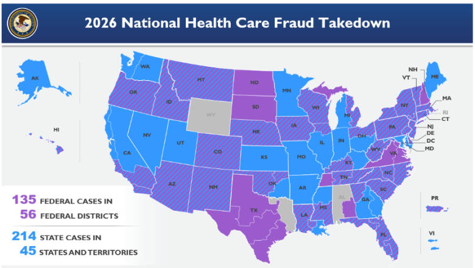

National Healthcare Theft • Local Fresno Arts Embezzlement • Failures of Oversight
Fraud does not occur in a vacuum. It exploits weak oversight, ignored warnings, and institutional reluctance to confront uncomfortable truths. This report examines a clear pattern across scales: the $6.5 billion national healthcare fraud takedown and the Fresno Arts Council / Measure P embezzlement scandal right here in our community.
In June 2026, the U.S. Department of Justice announced the largest coordinated healthcare fraud enforcement action in its history. Acting Attorney General Todd Blanche detailed charges against 455 defendants across 56 federal districts and 45 states — including 90 doctors and licensed medical professionals.
The schemes involved over $6.5 billion in false claims to Medicare, Medicaid, and related programs. This was organized theft from systems meant to care for seniors, the disabled, and vulnerable families.

Assets seized included Ferraris, yachts, multi-million-dollar homes, and luxury jewelry (one case featured an $865,000 Bulgari necklace). Meanwhile, patients suffered unnecessary procedures, neglect, and in documented cases, death from missed diagnoses or diverted opioids.
Right here in Fresno, the Fresno Arts Council — contracted by the City to administer Measure P arts and culture grants — was the victim of an embezzlement of approximately $1.8 million by former operations manager Suliana Caldwell.
Caldwell pleaded guilty in federal court to wire fraud. She made hundreds of unauthorized transfers over nearly four years, falsified financial reports presented to leadership and the city, and used the stolen funds for gambling, vacations, and personal expenses. The theft escalated after the Arts Council received millions in Measure P taxpayer funds.
I was present during filming at City Council and community proceedings where victims of this fraud — local artists and nonprofit organizations — testified and spoke directly about the impact. Their accounts highlighted not only the stolen dollars but the betrayal of public trust and the damage to Fresno’s cultural ecosystem and the artists who depend on these resources.
— Community Observer, The High Tower District
The city terminated its contract with the Arts Council, took over administration of the grants, and committed to making recipients whole. Community meetings revealed frustration over delays and lack of safeguards. This local case is a microcosm of the larger pattern: public funds intended for community benefit were diverted while oversight failed.
Fraud thrives where institutions are slow to act, warnings are minimized, or political considerations override program integrity. This is not partisan rhetoric — it is documented across multiple jurisdictions.
Independent journalist Nick Shirley used on-the-ground video, public payment records, and direct inquiry to expose suspicious facilities receiving large government payments in Minnesota (childcare fraud networks) and later California. His December 2025 / early 2026 videos went viral and aligned with subsequent federal actions.
Congressional oversight later found that in Minnesota, senior state officials were aware of fraud concerns in social services and Medicaid programs years earlier but failed to act decisively — continuing payments to high-risk providers and, in documented cases, retaliating against internal whistleblowers. Estimates placed hundreds of millions (and broader Medicaid risk in the billions) at stake.
Whether one agrees with every framing of citizen journalism, the underlying mismatch between public records and visible activity forced sunlight where official channels had not.
The U.S. Constitution assigns Congress the power of the purse and requires the executive to faithfully execute the laws. Public officials at every level have an obligation to safeguard taxpayer resources and protect the vulnerable populations these programs serve.
When oversight fails — whether through negligence, willful blindness, or resistance to accountability — it is not merely administrative failure. It undermines the rule of law and public safety.
We stand for community safety — from the street to the public ledger. Fraud in healthcare and local arts funding hurts the same neighbors we look out for.